In this writing, I want to share how creating a simple year-week calendar with the new calendar-based time intelligence feature turned into a deeper exploration — one that changed how I think about the relationship between calendar definitions and DAX functions.
What I didn't expect was a warning message that exposed a gap in my understanding: the calendar knew about weeks and dates, but it didn't know what a year was. That's the story I want to share.
1. Starting From What I Know: The Classic Date Table
For years, setting up time intelligence in Power BI followed a familiar ritual. I have a date table, I go to the Model view, I click "Mark as date table," and I select the date column. Done. From that point on, functions like SAMEPERIODLASTYEAR, DATEADD, and TOTALYTD just work.
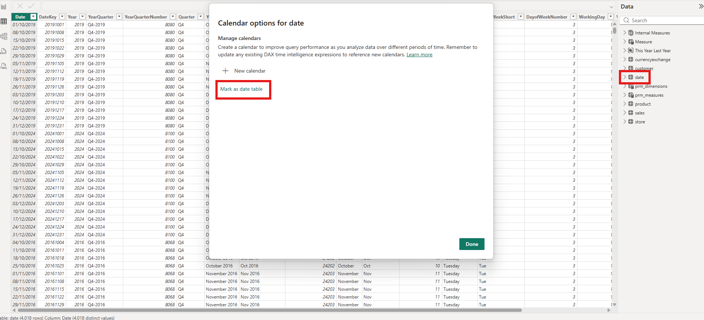
The "Mark as date table" dialog is straightforward — toggle it on, choose the date column, and Power BI validates the table automatically.
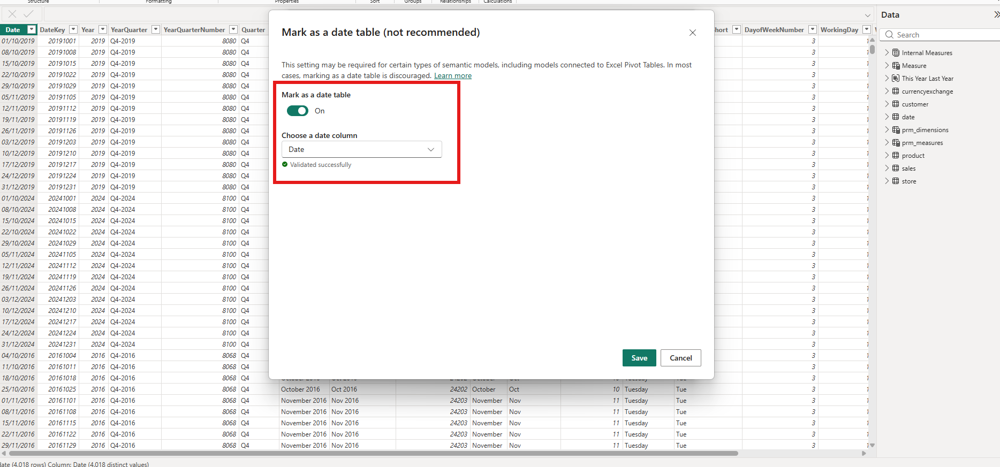
In TMDL, this classic approach produces a simple annotation on the table: dataCategory: Time. It's a single line that tells the engine "this table is a date table."
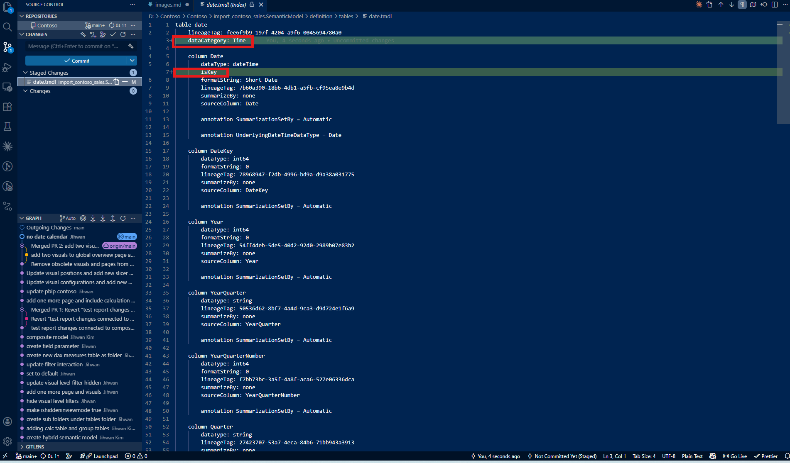
With this setup, a standard SAMEPERIODLASTYEAR measure works perfectly at both the year level and month level:
SPLY Total Sales =
CALCULATE([Total Sales], SAMEPERIODLASTYEAR('date'[Date]))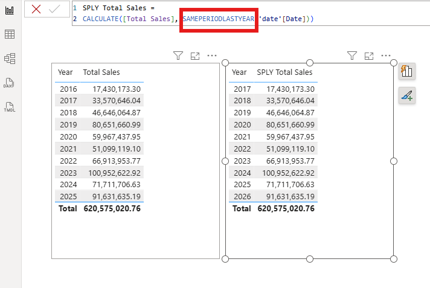
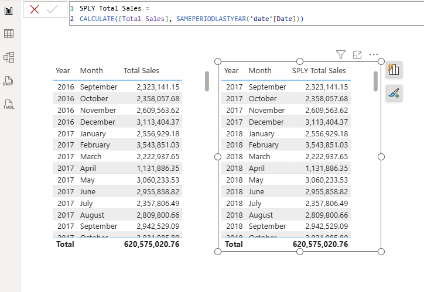
This is the approach most of us have used for years. But there's a new way.
2. The New Calendar Experience: A Different Mental Model
Calendar-based time intelligence, described under the "Calendar-based time intelligence (preview)" section in the Implement time-based calculations documentation, replaces the "Mark as date table" approach with something fundamentally different. As the docs put it: "Calendars are metadata definitions added to a table to indicate which columns from that table represent what attributes of time." Instead of simply marking a table, I now define a calendar — specifying which columns represent which time categories.
The shift is subtle but significant. "Mark as date table" treats the entire table as a monolithic date reference. The new calendar approach lets me define how time is structured in my data — what constitutes a year, a quarter, a month, or a week.
My date table already had a Year-Week Number column with values like "2016-20W", "2016-21W", representing year and week combinations. I wanted to use this column for week-level time intelligence calculations.
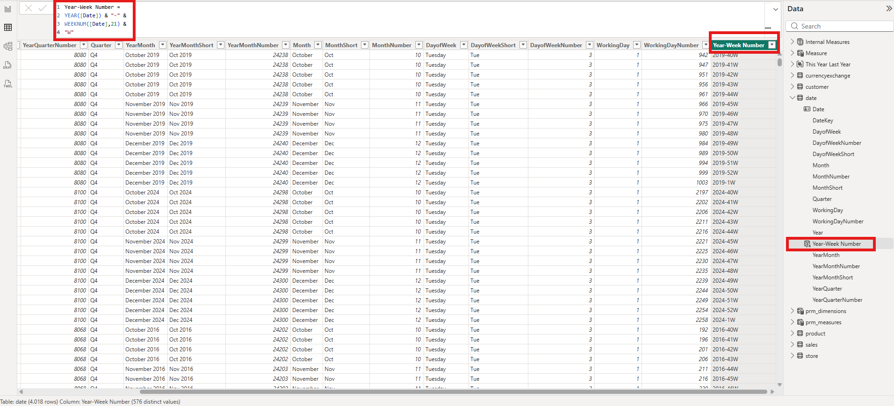
In the Calendar options dialog, I clicked "New calendar" to create a custom calendar definition.
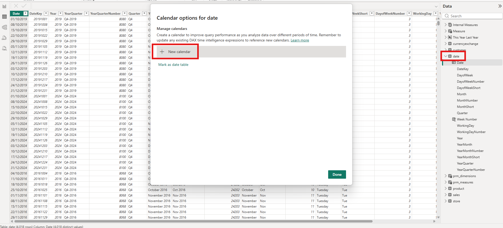
I named it year_week_calendar and added two categories: Week mapped to my Year-Week Number column, and Date mapped to the Date column. The "Validate data" button confirmed everything looked good.
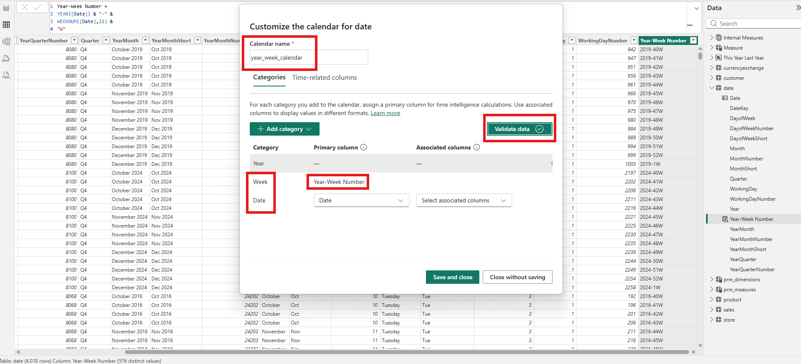
The calendar appeared in my calendar list. I was ready to write DAX measures against it.
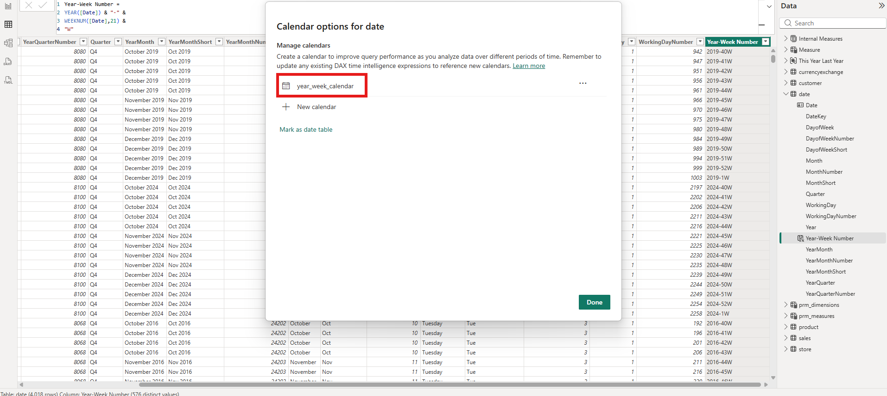
3. The Surprise: Week vs. Week of Year
Before I get to the error I encountered, there's a subtle distinction in the category dropdown that caught my attention. When adding a category, the list offers both Week and Week of Year — and they mean different things.
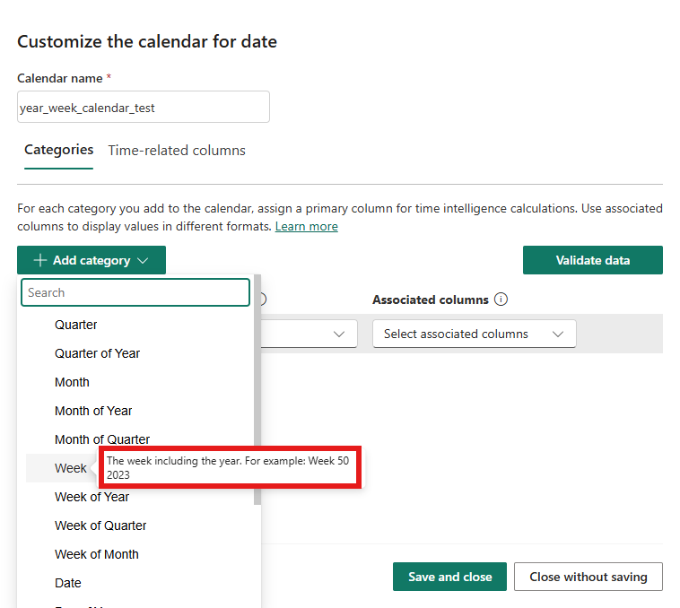
Week is described as "The week including the year. For example: Week 50 2023." This is for columns where each value uniquely identifies a specific week in a specific year — like my Year-Week Number column with values "2016-20W".
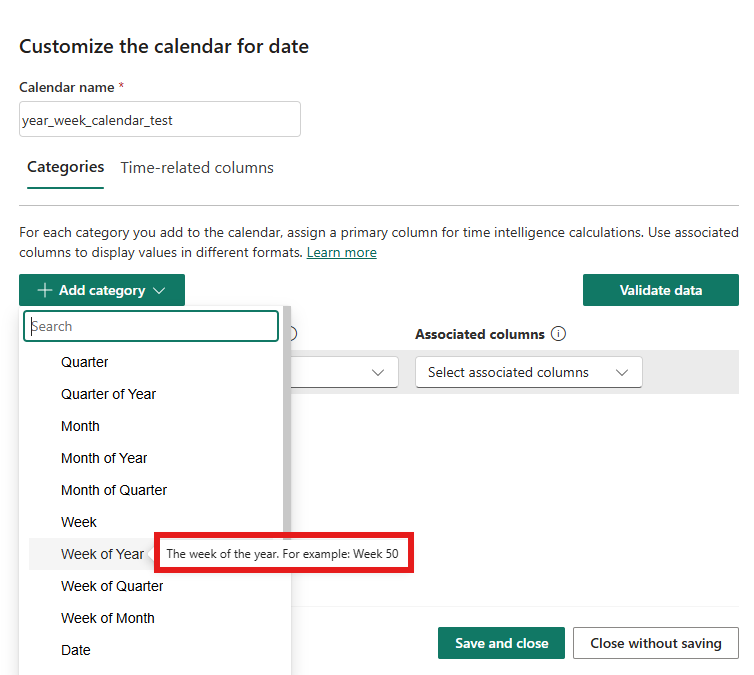
Week of Year is described as "The week of the year. For example: Week 50." This is for columns that contain just the week number (1 through 52 or 53) without any year context — a relative position within any year.
The distinction matters because the engine needs to know whether a column value can stand on its own as a unique time identifier or whether it repeats across years. The Microsoft documentation categorizes these under the "Available column categories" section: Week is a "Complete" type — its values are enough to uniquely identify the time period on their own. Week of Year is a "Partial" type — it needs a parent category like Year to become unambiguous. This is also why the "Period Uniqueness" validation section in the docs lists valid category combinations for week-based calendars: Week alone is valid, but Week of Year requires pairing with Year. Choosing the wrong one could lead to incorrect calculations that are hard to debug.
4. The Warning That Changed Everything
With my year_week_calendar set up with Week and Date categories, I wrote what I expected to be a straightforward measure:
SPLY by Week Total Sales =
CALCULATE([Total Sales], SAMEPERIODLASTYEAR('year_week_calendar'))Instead of correct results, I got a warning banner:
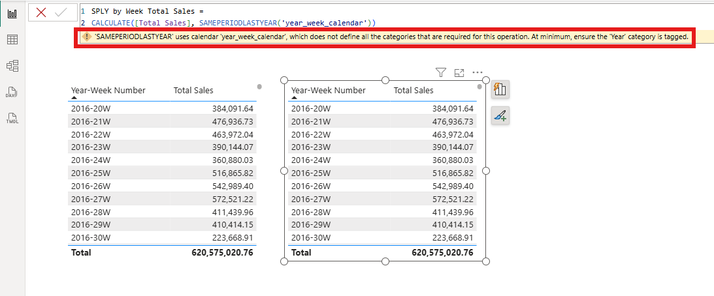
"'SAMEPERIODLASTYEAR' uses calendar 'year_week_calendar', which does not define all the categories that are required for this operation. At minimum, ensure the 'Year' category is tagged."
Look at the two tables in the screenshot. The left table shows Total Sales by Year-Week Number. The right table shows SPLY by Week Total Sales — but the values are identical. 2016-20W shows 384,091.64 on both sides. No year shift happened at all.
This was my first aha moment: a calendar with only Week and Date categories has no concept of what a "year" is. The function SAMEPERIODLASTYEAR literally needs to know where year boundaries are to shift across them. As the Microsoft documentation states under "Time intelligence functions and required categories": "Many time intelligence functions require sufficient categories to be included on the calendar... so Power BI can identify a uniquely particular unit of time. In other words, Power BI needs to be able to 'walk-up' from the level the calculation is performed on all the way to an individual year." Without a Year category, the engine doesn't know how to find "last year" — so it silently returns the current period's value instead.
The warning was informative, but what concerned me was that it didn't prevent the measure from returning results. It returned wrong results — values that look plausible at first glance. In a production report, this kind of silent failure could go unnoticed for weeks.
5. The Fix: Adding the Year Category
The fix was straightforward once I understood the problem. I went back to the Calendar options, clicked the edit button on my year_week_calendar, and added the Year category mapped to the Year column.
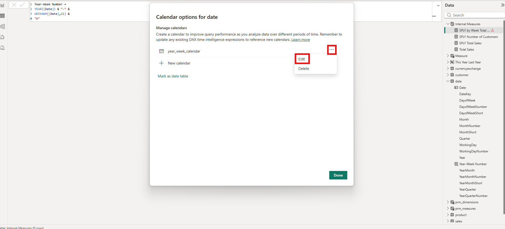
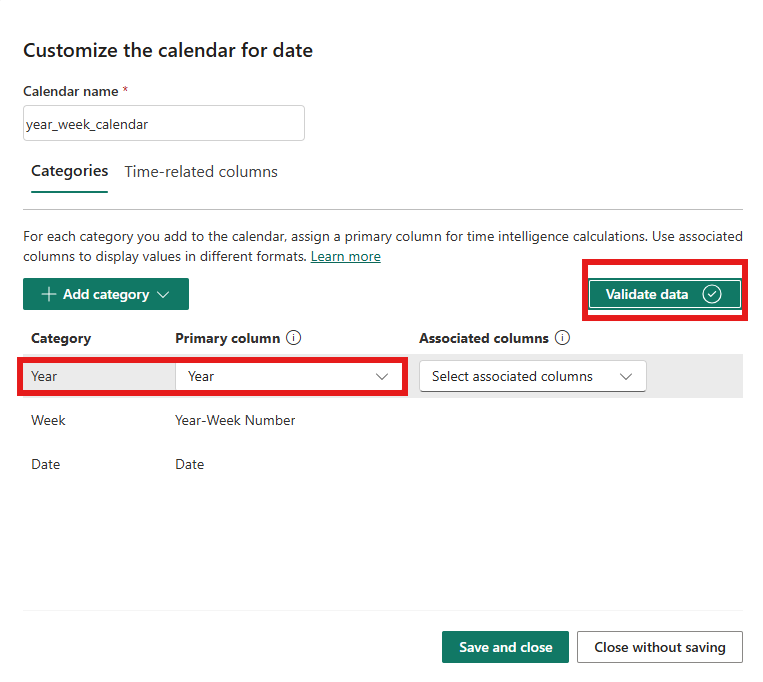
The calendar now had three categories: Year, Week, and Date. The "Validate data" button confirmed the configuration was valid.
Before: TMDL with Week Only
Before the fix, the TMDL showed calendarCalendarGroup = week — meaning the highest-level category in the calendar was Week.
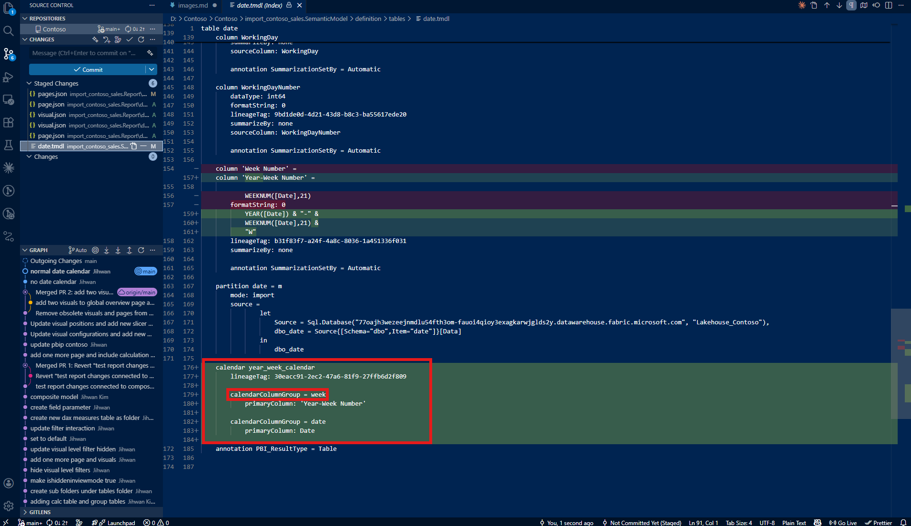
After: TMDL with Year Added
After adding the Year category, the TMDL now shows calendarCalendarGroup = year. The calendar object gained a new entry for the Year category.
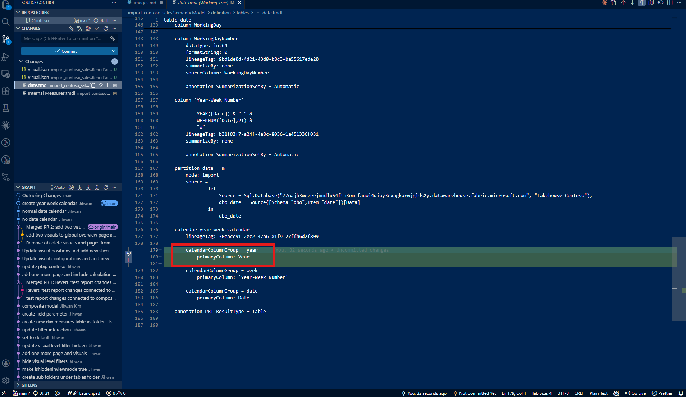
The Result
With the Year category in place, the same measure now works exactly as expected:
SPLY by Week Total Sales =
CALCULATE([Total Sales], SAMEPERIODLASTYEAR('year_week_calendar'))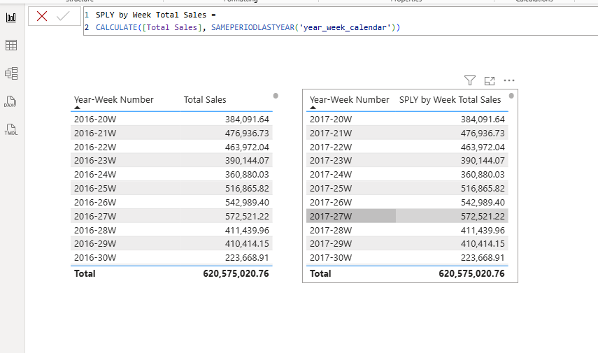
2016-20W on the left now correctly maps to 2017-20W on the right. The year shift is working. The values are properly compared across years at the week level.
Here's the second aha moment: the TMDL calendarCalendarGroup property tells you the highest-level category defined in the calendar — and it must reach year for any year-based time intelligence function to work. This single property in the TMDL file becomes a quick diagnostic — if I see calendarCalendarGroup = week and the model uses SAMEPERIODLASTYEAR, I know there's a problem before even opening Power BI Desktop.
6. The Next Question: Does Date Even Belong Here?
With the calendar working, I had three categories: Year, Week, and Date. But looking at my setup, I started to wonder — if this is a year-week calendar, why is the Date category included at all? My SAMEPERIODLASTYEAR measure operates at the week level, not the date level. What happens if I remove it?
I went back to the calendar editor and deleted the Date category, leaving only Year and Week.
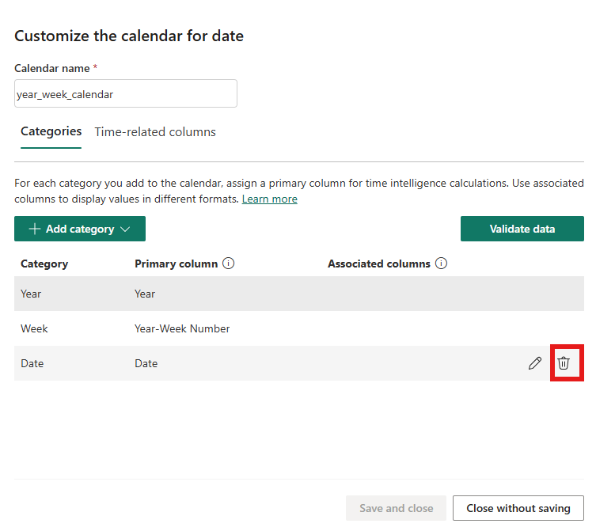
The measure still worked perfectly.
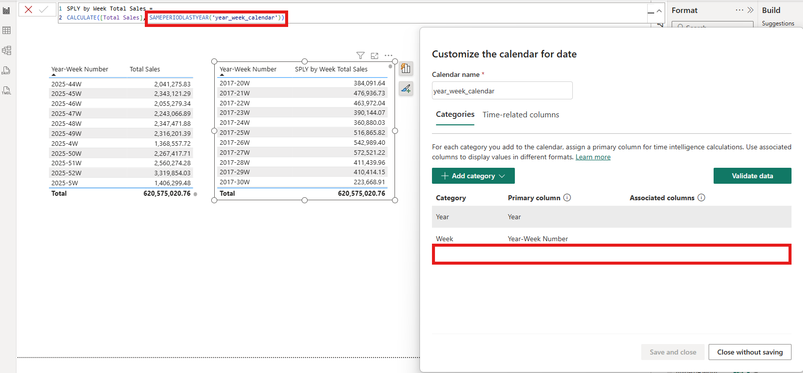
This wasn't just a lucky coincidence. The Microsoft documentation under the "Period Uniqueness" validation section lists the valid category combinations for week-based calendars. The very first option is simply: Week. The Date category is not required. Since Week is a "Complete" type (it uniquely identifies a time period on its own), and I already have Year for the year-level functions, the combination of Year + Week is enough.
So was including the Date category a mistake? Not exactly — the calendar validates fine either way. But including Date when the calendar's purpose is week-level analysis has real implications.
The key is in how context clearing works, explained under the "Context clearing" section of the documentation. When a time intelligence function operates on a calendar, it clears filter context on all columns tagged in that calendar that are dependencies or dependents of the shift level. If the Date category is included and tagged, the engine must consider date-level context clearing even for a week-level operation. Without it, the engine only needs to reason about Year and Week — a simpler and more focused context clearing path.
The documentation also states under "Considerations for working with calendar-based time-intelligence": "We recommend you associate only the columns in your calendar that you want to use in time intelligence calculations." In other words, don't include categories you don't plan to calculate at. For a year-week calendar that will never need day-level time intelligence, leaving out the Date category isn't just safe — it's the intended design.
This was my third aha moment: a calendar should only define the categories that match the granularity of the calculations it supports. Including extra categories doesn't just add unnecessary metadata — it widens the context clearing scope and obscures the calendar's purpose. A Year + Week calendar is a clear signal: "this calendar supports week-level and year-level time intelligence, nothing more."
7. What Changed in TMDL: From Annotation to Calendar Object
Stepping back, the TMDL representation of time intelligence has fundamentally changed between the old and new approaches.
The classic "Mark as date table" produces a single annotation:
dataCategory: TimeThat's it. One line. It tells the engine "this is a date table" but says nothing about the structure of time within it. The engine figures out year, quarter, month, and day relationships on its own, assuming a standard Gregorian calendar.
The new calendar-based approach produces a full calendar object in TMDL:
calendar year_week_calendar
calendarCalendarGroup = year
primaryColumn: Year
calendarCalendarGroup = week
primaryColumn: 'Year-Week Number'This is richer and more explicit. Each category is named, mapped to a specific column, and organized into a hierarchy. The calendarCalendarGroup entries make the structure visible at a glance — this calendar supports Year and Week, nothing more. If I'm reviewing a colleague's semantic model in a pull request, I can immediately understand the calendar's purpose and granularity without opening Desktop.
The shift from a one-line annotation to a structured object is a fundamental improvement in how time intelligence is represented as code.
8. From a DevOps Standpoint: Calendar Definitions as Code
From a DevOps standpoint, this structural change is foundational.
Version Control and Git
Calendar definitions in TMDL are plain text and fully diffable. When I added the Year category to my year_week_calendar, that change would show up as a clear, line-by-line diff in Git. A commit message like "fix: add Year category to year_week_calendar for SPLY support" tells the full story. If the change causes unexpected behavior downstream, I can trace it back to a specific commit and revert if needed.
Compare this with the old approach: changing "Mark as date table" settings in Power BI Desktop produces no meaningful diff because dataCategory: Time stays the same regardless of which columns exist. The new calendar object captures the actual structure, making changes trackable.
Code Review and Pull Requests
In a pull request, a reviewer can now verify that a calendar defines the right categories mapped to the right columns — without opening Desktop. If a developer creates a new week-based calendar and forgets the Year category (exactly the mistake I made), a reviewer can catch it by looking at the TMDL diff. The presence or absence of calendarCalendarGroup = year becomes a clear review checkpoint.
Validation and Governance
The structured nature of the TMDL calendar object opens the door for automated validation. A CI/CD pipeline could parse TMDL files and enforce rules like: "every calendar must define a Year category" or "calendars should only include categories that match their intended calculation granularity." This kind of governance catches misconfigurations before they reach production — preventing the silent wrong-results scenario I experienced during my own exploration.
Closing Thoughts
This experience left me with a new mental model: calendar-based time intelligence isn't just a new way to set up date tables — it's a contract between your calendar definition and your DAX functions. The categories I define determine which functions will work correctly. Missing a required category doesn't break the model — it silently returns wrong results, which is arguably worse. And including unnecessary categories adds complexity without benefit.
The TMDL representation makes this contract visible and reviewable. The calendarCalendarGroup entries tell me exactly what levels of time hierarchy my calendar supports — and equally important, what it intentionally does not support. That visibility, combined with Git-based workflows, transforms calendar configuration from a hidden Desktop setting into a first-class, auditable piece of code.
I hope this helps having fun in exploring calendar-based time intelligence and embracing this new era of flexible, code-first DAX time intelligence!